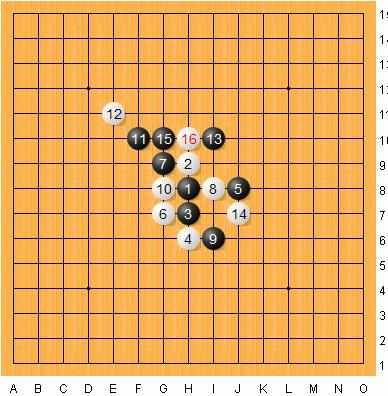
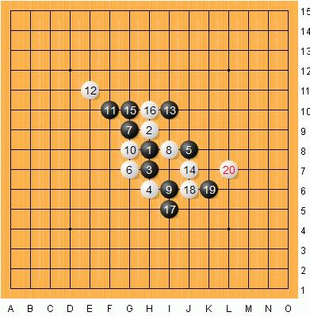
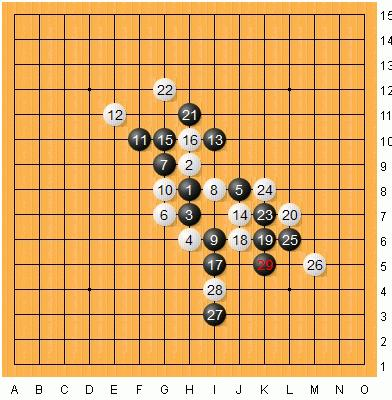
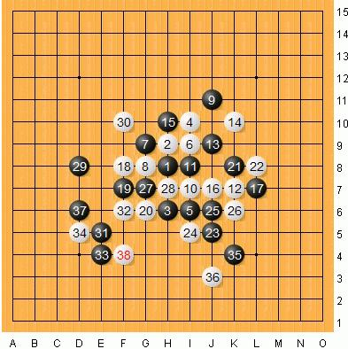
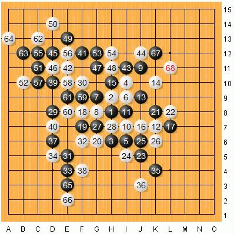

进攻与计算力
#1 进攻与计算力 作者：茗弈小刀 发表时间：2009-6-22 13:56:59
我今天主要是和大家分享我这6年来下棋和练棋的过程和经验，以及我个人对于下棋计算力的一些理解。
我是一个喜欢进攻的棋手，以黑棋来说，一般情况下前60手是有优势和先手的一方，往往也就是进攻的一方。在白方不犯任何错误的情况下，黑棋在局面上的优势来源于开局。那么，在双方选择了某一开局的某一分支之后，当我做为黑棋的一方，我会首先判断黑棋的优势有多大，若只是局部的优势，黑若去那一局部强攻，只要白方防守正确，那样子等于是把优势拱手送于对方。
在这一种情况下我有两种选择：一是以守待攻，以防守来为我将来的进攻做准备，尽管我是黑棋有先手有优势的一方，一般情况下是进攻的一方，可是当我是先手一方还选择防守，对于白棋来说，若想赢棋，将是难上加难，在这种情况下，给对手以心理上的打击，使对方下棋的心态不能保持平静，走出来的棋也就容易犯错误，自己更有机会取得胜利。第二种方法是以“搅”待攻，那什么是“搅”呢？我们来看看这样的一个基本开局：
从这开局棋中我们就能看到所谓的“搅”就是在某一局部双方互攻互防直到定型的一个过程。“搅”棋有二个基本条件：一是 “搅”到最后定型，得有对于自己有利用的活二或眠二眠三线可利用；二是 “搅”完之后先手还是得自己的。如果这二个条件都不成立那情愿不去“搅”。比如下面这盘棋：

白16手之后黑想走16上边这个很好的进攻点，可是由于白棋在下方有一个斜二和斜眠三，为白棋将来的进攻做好了基础。

所以黑棋选择17防守，先和白方在左下“搅”棋，到20之后，黑方已将白棋左下的优势“搅”没了，这时黑可以放心大胆的在上方做棋进攻了.

在黑棋优势比较大的局面下，大多数棋手都会首先去选择进攻扩大优势，这是常理。可是又如何扩大优势呢？在中盘，处于黑大优的局面，往往有二个或者二个以上的局部都有优势，但是每一个局部都没有必胜，在这种情况下，很多的棋手往往会考虑连接两个局部的优势，来形成杀。而我则喜欢用模糊进攻的方式。所谓模糊进攻，就是直接走在两个局部连接的中间，让对手无法准确判断出我到底是想选择哪个局部做为主攻方向，以此来迷惑对手，使对方防守出错.
比如下面这盘棋:

到28手定型之后，黑优，而且是先手，黑棋在上方和右下方分别有些优势，可是这两个局部既没有局部的杀，更没有连接的好手段，那在这种情况下黑应该选择怎样进攻呢？

到现在为止我们回到黑29手看，29手就是模糊进攻的一手试探棋，到38，白棋防守无误，黑无杀.

局面进行到这里，做为黑棋就应该换一种进攻思路，“以攻为守”。用进攻来消耗棋盘，为和棋做准备39-41都是围绕着这一思路走的棋，这样到最后白棋在上方也没有多少空间可以进攻了。43-63这二十手棋的进攻和双方的交换，黑已把左上的空间完全消耗掉了，这时局面已经是接近和棋的局面.
最后和大家讲讲我个人对于计算力的理解。计算力我个人认为它包括了五个方面：计算的速度，计算的深度，计算的广度，计算的准确度和计算的密度。计算的速度和深度顾名思义。计算的广度是指选择点的多少，一个棋手在选择第一个点计算的时候，也许不是最佳的好点，这就需要多找几个点分别计算之后才能确定到底哪个点才是最利于自己的，这就是广度。衡量一个棋手计算力强弱的标准我就认为是计算的准确度，何为准确？就是计算的步数，落点，手顺均是最佳，且在这一过程中不能出现误算。
为尽量避免误算，在慢棋赛中，我推荐采取三次复算的方式，第一次只是简单的计算自己棋线位的连接，第二次则是穷尽对方所有的防点，包括冲四的防点，第三次是将自己的棋和对方的棋结合在一起共同计算，有时候在复杂的局面下，还可以进行第四次复算，以做到尽量的避免误算。因为一旦出现误算，会将自己下棋的心态弄垮，以后走出的棋也没有自己平时的水平。计算的密度是指在慢棋比赛中，一个棋手长时间算棋，难免会出现头脑发昏甚至算不下去棋的情况。在这样的情况下，走出来的棋往往容易出错，对于这种情况，我建议选手采取每算30分钟就会离开比赛场地5分钟左右，休息一下头脑，再回去继续算棋，以保证自己的思路长时间保持良好状态.
#2 Re:进攻与计算力 作者：苍蝇也是肉 发表时间：2010-10-13 13:32:45
小刀老师威武~~~